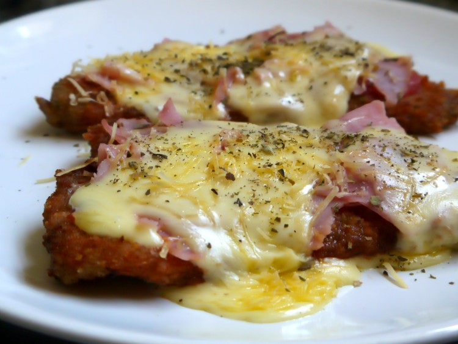

Milanesa Napolitana

Como hacer una Milanesa Napolitana
La milanesa napolitana o milanesa a la napolitana es un plato que consiste en una milanesa generalmente de carna vacuna al horno y recubierta de manera similar a una pizza, cuyo origen se encuentra en Buenos Aires y no en Italia, como frecuentemente se suele pensar.
Ingredientes
- Milanesas
- 150 g de queso mozzarella
- 150 g de jamon cocido
- Puré de tomate
- Una cebolla
- 2 dientes de ajo
- 2 hojas de Laurel fresco
- Aceite
- Sal
- Pimienta (opcional)
Pasos a seguir
Para la salsa de tomate
- Picamos el ajo y la cebolla
- Calentamos una olla con aceite, ponemos el ajo y la cebolla dentro y esperamos que la cebolla se transparente
- Despues, agregamos el pure de tomate y las dos hojas de laurel, deje cocinar por alrededor de 20 minutos
- Agregamos sal y pimienta a gusto
Armado de la milanesa
- Colocamos por encima de nuestra milanesa, la salsa que acabamos de hacer
- Luego, colocamos unas fetas de jamón cocido
- Finalmente por encima, ponemos el queso mozzarella
- La llevamos al horno a 180 grados hasta que se derrita el queso y chorree por los costados generando el efecto más hermoso y tentador del universo
- Al sacarla podemos tirar por encima unas pizcas de orégano y !listo!